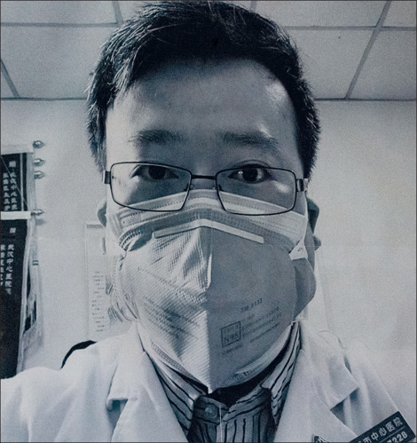

Welcome to My Personal Site
I am a sophomore at the University of Michigan and my major is CS. I enjoy traveling and photography and I have traveled to many countries and regions. I love different cultures, and I like to record different human and natural landscapes with my camera. I have put some of my photos and my thoughts on this website.
The coronavirus outbreak has been going on for two years. It was definitely two years in the annals of human history. Two years ago, on February 7th, an ophthalmologist in Wuhan died of COVID-19. I wanted to honor him by putting his picture on this page
The outbreak was later confirmed not to be SARS, but rather a new coronavirus, SARS-CoV-2. Li returned to work and later contracted COVID-19, the disease caused by the virus, from a patient who was not known to be infected. He died from the disease on 7 February 2020, at age 33. A subsequent Chinese official inquiry exonerated him; Wuhan police formally apologized to his family and revoked his admonishment on 19 March. In April 2020, Li was posthumously awarded the May Fourth Medal by the government. By early June 2020, five more doctors from the Wuhan hospital had died from COVID-19.